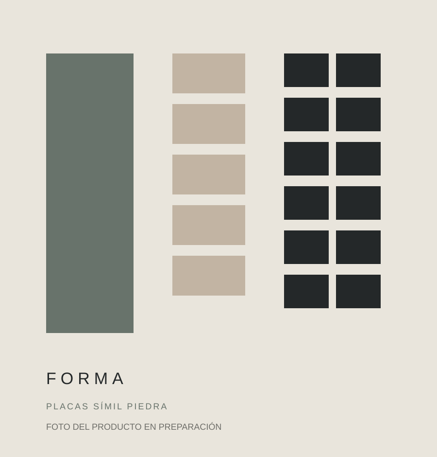

PendientePlacas símil piedra · PUERTO MADRYN
Placa Simil Piedra Pu Blanco
Revestimiento liviano con textura símil piedra para generar volumen y profundidad.
COLORES Y VARIANTES


- Formato
- 120 X 60
- Disponibilidad
- Sujeta a confirmación
- Presentación
- Caja de 6 unidades
Disponibilidad: Consultar
Precio y disponibilidadConsultar precio
Consultar por WhatsAppConfirmamos precio, disponibilidad y entrega antes de cerrar el pedido.
MÁS OPCIONES